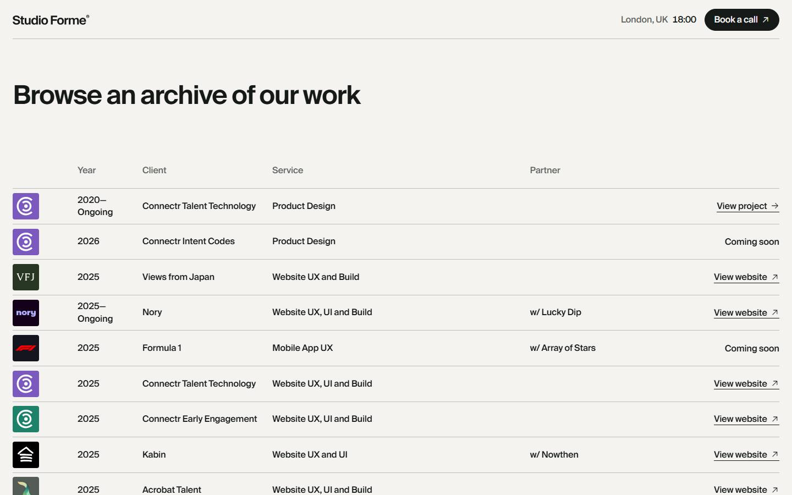
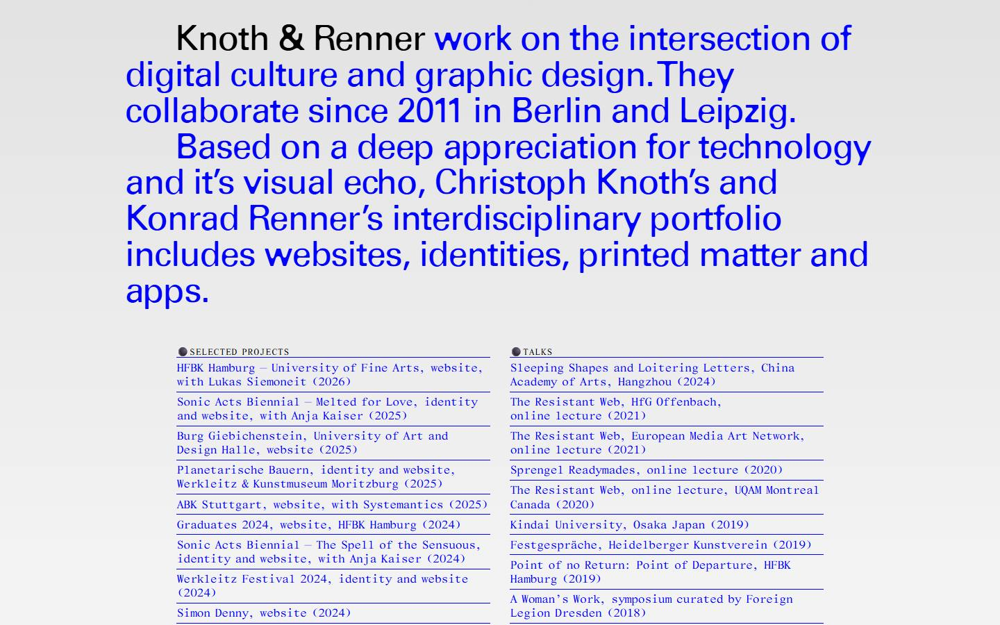
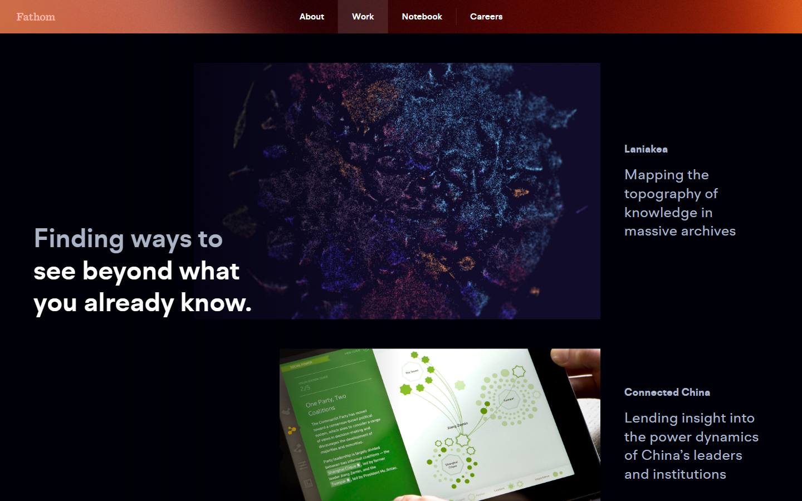
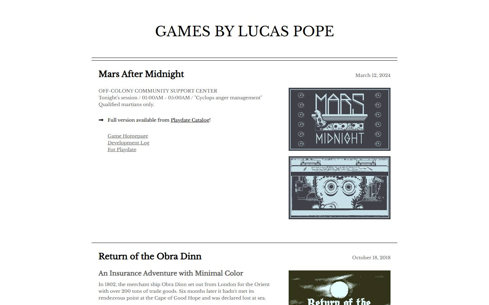
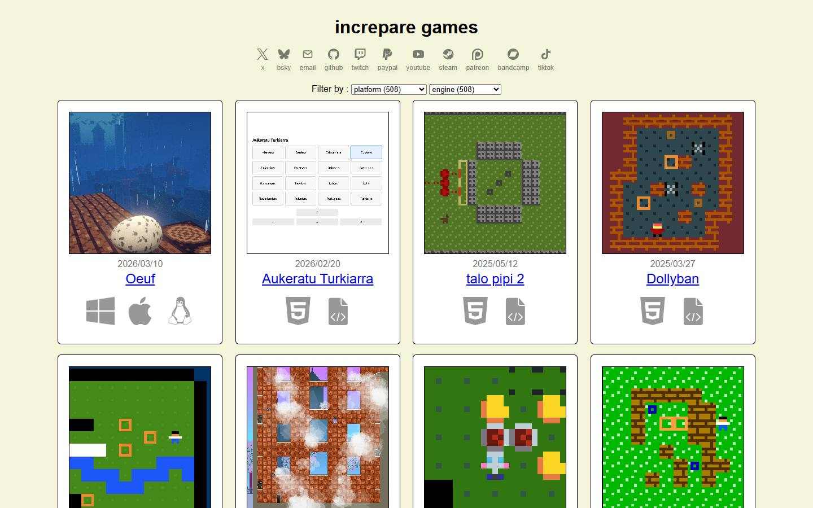
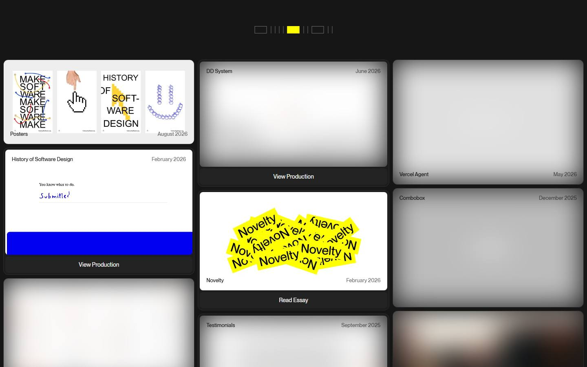
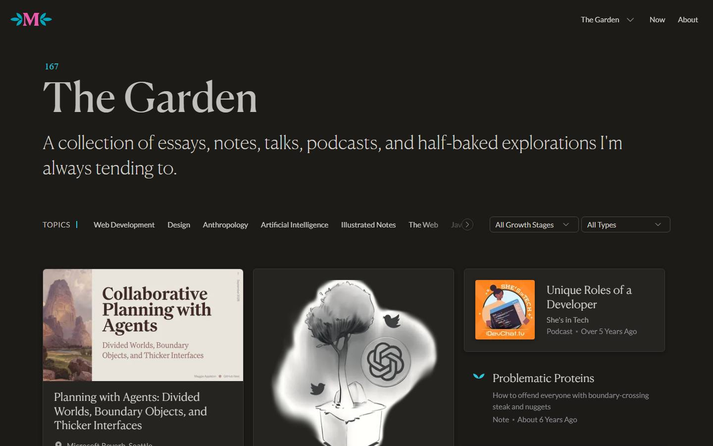
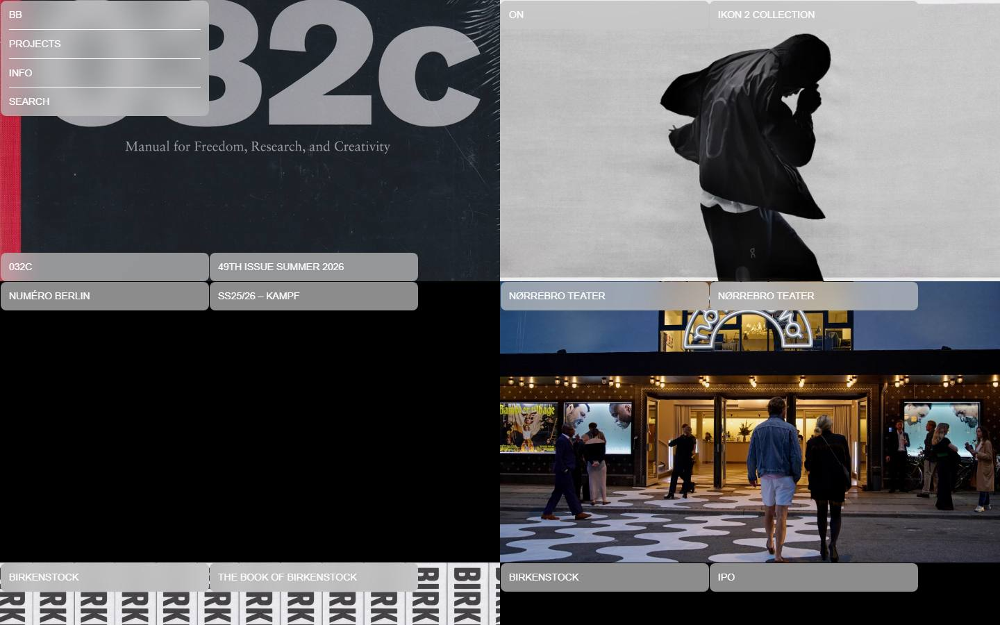

Study 15 · 1 October 2026
Work pages
Twenty ways studios show a body of work.
Number it
Filter it
One line each

Studio FormeIndex table that credits partner studios on every row
Knoth & RennerEach project is one credit sentence, linking to the live thing
FathomEvery project captioned with the verb of what it does
Lucas PopeEach game introduced in the voice of its own fictionOver time

increpare gamesEverything ever made, dated to the day, nothing curated out
Rauno FreibergA dated lab log: tiny experiments next to shipped work
Maggie AppletonEach piece labelled by maturity: seedling, budding, evergreen
Bureau BorscheLong client relationships shown season by seasonSort by something else
Make it a place
Keep the record elsewhere
Looked at 31, kept 20
Cut: OFFICE KGDVS, Assemble, Bruno Simon, Martin Laxenaire, Lynn Fisher, Studio Oleomingus, HATO, Estudio Além, Studio Feixen, Henry Heffernan, Sonia Bailey.
Screenshots of the live sites, 2026-10-01. Click one to visit.